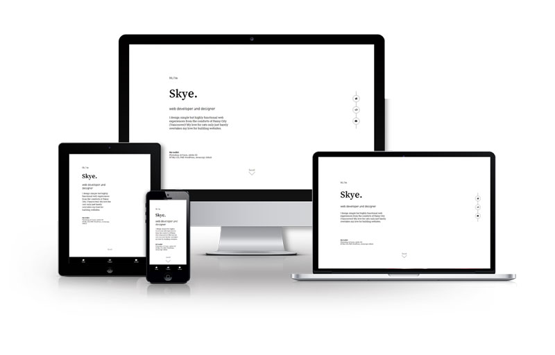

Web Dev Portfolio
Portfolio
5 weeks
HTML/CSS, SASS, JQuery
This site, the portfolio, was created to showcase my design and development projects and serve as a display of my skills and abilities. It features a simple and clean design.
Team: Skye Yang
Role: Content Planner, UI Developer, Front-End Developer
Process
Planning
The stages of this project can be broken down into a few main steps:
- Research
- Content planning
- Sitemap creation
- Wireframing and style tile
- Development
I created a detailed content plan with several lists of what content was to be featured in my portfolio. This included:
- Which pages to have (home page, project pages)
- What sections each page should have
- What content should be in each section
- Additional notes with thoughts and potential features
The content plan was created with consideration of key points I'd noted down during research:
- An 'about' section can be short and sweet
- Project summaries with links to more details is common
- The 'whys' are just as important as the 'hows'
- The portfolio itself can also be a showcase piece
After putting together the content plan, I created a rough wireframe. I wanted most information to be accessible without having to leave the home page, so I featured my projects right below the landing area; visitors are prompted to scroll down by the text and animated arrow at the bottom of the section. If a project catches the visitor's eye, they can click on the 'see details' button to look into my process and thinking. If they are intrigued after reading through my process, there is a contact button conveniently placed right below it.
I then proceeded to put together a moodboard for the portfolio, beginning with a picture of newsprint as the starting point—as I knew I wanted to aim for something with a very clear structure—and evolving to a high-contrast but clean look. Following the moodboard, I created a simple style tile to guide the look of the site.
{kind=link}
{kind=link}
Click images to enlarge.
The red accent ended up being less prominent in the final site, only appearing on elements with focus states. This was done so keyboard users would be able to see where they are on a page more clearly.
Development
After the style tile was made, I moved into the development of the site. I approached this phase in a specific order:
- HTML structure was set up based on wireframes
- Added content to the home page
- Added content to one project page
- Styled the two pages with Sass and gulp.js
- Added JQuery plugins and JS scripts
- Created remaining project pages from the completed project page
The usage of Sass and gulp.js during the styling phase kept my code organized and easy to work with. It also allowed me to make quick tweaks and see the changes live, which significantly sped up the development process.
Both the mobile and desktop views of the site have fixed navigation bars, with the mobile view having it at the bottom of the screen and the desktop view having it on the side. This is to make going between the different pages and sections quicker, as the user wouldn't have to scroll back to the top of the page.
{kind=link}
{kind=link}
Click images to enlarge.
Headings and subheadings were also made keyboard-focusable for keyboard users, and a return to top link was added at the bottom of each page.
Challenges and Takeaways
While this project was quite enjoyable overall, it wasn't without its struggles. It was the first time I've put together a professional portfolio for myself so I was very nervous about doing it the right way. If anything, the majority of the struggles stemmed from the thought of doing something that will directly impact my future.
Breaking down the process into stages and sticking to them greatly facilitated both the design and development process, and completing them before my personal deadlines allowed me to reflect on and make improvements on my plans.
Takeaways